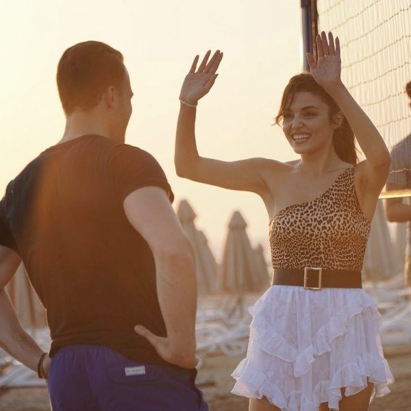
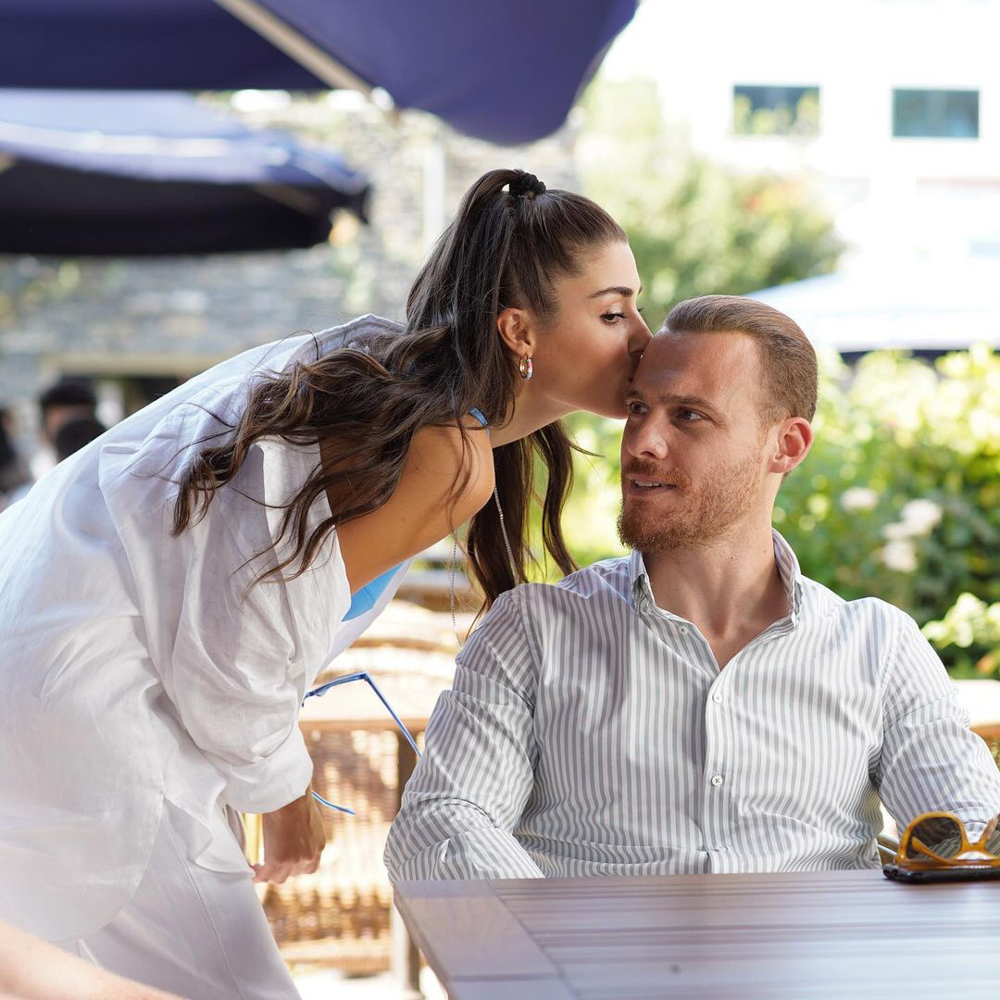

Автор: Светлана Власова 25 февраля 2021

"Рейтинги стремительно падали, в связи с чем было принято решение изменить эфирное время. Во время летнего сезона сериал «Постучи в мою дверь» имел бешеную популярность, но с наступлением осени рейтинги стали падать. Всеми силами сценаристы и актеры пытались реабилитировать ситуацию, однако, все было бесполезно. Тогда появилась мысль о закрытии проекта"...
Автор: Руслана Алексеева 26 января 2022
"Хандэ Эрчел и Керем Бюрсин составили красивый дуэт не только на экране, но и в жизни. Экранный роман звезд сериала "Постучись в мою дверь", к большой радости поклонников, стал реальным. Незадолго до финала теленовеллы Хандэ и Керем публично признались в чувствах друг к другу. Общаясь с журналистами, Бюрсин заявил, что новости о его романе с партнершей по сериалу появились раньше, чем он осознал свою влюбленность. Эти отношения, уверяет артист, выросли из дружбы"...
Автор: Елена Звягина 29 января 2021

"В начале августа на телеканале «Суббота!» стартовал турецкий сериал «Постучись в мою дверь». Главные роли в проекте исполнили Ханде Эрчел и Керем Бюрсин. В центре сюжета история девушки, которая ради исполнения своей мечты решается на необычную сделку с бизнесменом. Однако, сериал, который транслировался в дневном слоте, не собирал достаточного объема аудитории, в связи с чем канал принял решение снять его с эфира"...